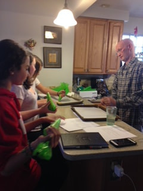

David Rexford was an executive pastry chef for the Washingtons Four Seasons Hotel, Maryland's Albert Uster Imports and several other elite restaurants. He baked for many distinguished groups of people including the White House, Congress and the Washington Ballet. When Mr. Rexford was diagnosed with ALS in late 2016 he was forced to retire not long after. Amyotrophic Lateral Sclerosis (ALS) is a nervous system disease. This is a terminal illness which affects the motor skills of the person diagnosed including walking, eating, speaking and eventually affects breathing. David's disease appeared as "bulbar onset" which affects the part of the brain that controls facial muscles. David soon lost his ability to speak and eat. This did not inhibit him from continuously baking despite the fact that he could not enjoy his delicious creations. For David, sharing with others his love for baking was more important. David held baking classes giving us the chance to learn from his expertise. No longer being able to speak, David was able to communicate through demonstrations and using a whiteboard. David taught us many baking techniques as we learned how to make rugelach, cream puffs, churros, cookies, and cakes. David was not only cracking eggs in the kitchen but cracking jokes as well. Sadly David passed away on November 3, 2018 leaving behind his legacy of his love to bake. It was David's wish to sell the desserts we learned how to make and donate the proceeds to research along with technology to aid people diagnosed with ALS. We are having this fundraiser in his honor and all the proceeds will be donated to the Maryland Chapter of the ALS Association. (
Elise Webb (17) Katie Orr (16) Grace Oristian (14) Reese Rosenbloom (14)
